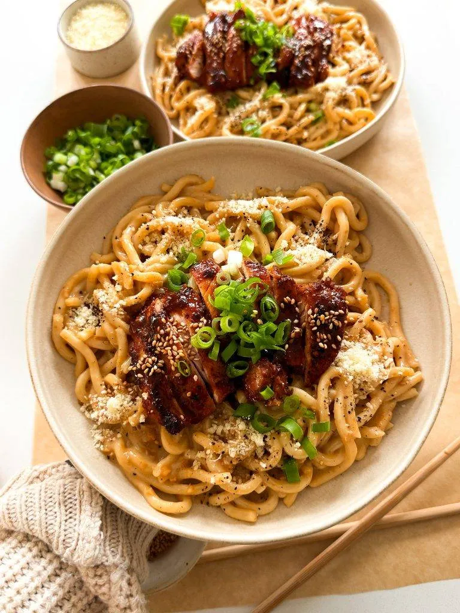

Comfort Food Cookbook

GARLIC NOODLES WITH TERIAKI CHICKEN
PREP TIME: 15 MINUTES
COOK TIME: 30 MINUTES
TOTAL TIME: 45 MINUTES
YIELDS: 2 TO 3
INGREDIENTS:
CHICKEN:
- 1 pound boneless skinless chicken thighs, about 4 pieces
- 1/2 tablespoon chili powder
- 1 teaspoon smoked paprika
- 3/4 teaspoon onion powder
- 1/2 teaspoon salt
- 1/4 teaspoon black pepper
- 1 teaspoon red pepper flakes
- 1 tablespoon olive oil
TERIYAKI SAUCE:
- 2 teaspoons sesame oil
- 1/4 cup low-sodium soy sauce
- 2 tablespoons rice vinegar
- 3 tablespoons brown sugar
- 1/2 teaspoon black pepper
- 1 tablespoon minced garlic
- 2 teaspoons minced ginger
- 1 teaspoon cornstarch
- 1 tablespoon water
GARLIC NOODLES:
- 2 7-ounce packages cooked udon
- 6 tablespoons unsalted butter
- 1 1/2 tablespoons minced garlic
- 3 tablespoons low sodium soy sauce
- 1 tablespoon oyster sauce
- 1/4 cup heavy cream
- 1/4 cup parmesan
- dash of salt, taste
- black pepper, to taste
- 1 teaspoon white sugar
FOR SERVING:
- green onions, chopped
- toasted sesame seeds, garnish
INSTRUCTIONS:
MAKE THE TERIYAKI CHICKEN
- To a bowl, add the chicken thighs and season with chili powder,
smoked paprika, onion powder, salt, black pepper, red pepper flakes,
and olive oil.
- Mix together to marinade evenly and set aside.
- To another bowl or measuring cup, add the ingredients for the
teriyaki sauce: sesame oil, soy sauce, rice vinegar, brown sugar,
black pepper, minced garlic, and minced ginger. Whisk together
well.
- Heat a large frying pan over medium-high heat. Add the chicken
thighs in, making sure not to crowd them.
- Sear on one side for 2 to 3 minutes and then flip over and repeat.
Then drop the heat to medium or medium-low for 2 to 3 minutes again
just until the chicken is fully cooked in the center.
- Once cooked, remove the chicken from the pan.
- To the same pan, add in the teriyaki sauce. Bring to a soft boil
and then drop the heat to simmer for 2 to 3 minutes.
- Mix together the cornstarch with water to make a slurry and add it
to the pan. Stir together until the teriyaki sauce thickens.
- Add the chicken back in and fully coat in the teriyaki sauce on
both sides. Take off the heat.
GARLIC NOODLES
- Heat a pan over medium heat and add the butter.
- Once melted, add in the minced garlic and saute for 2 to 3 minutes
until fragrant and toasted.
- d soy sauce, oyster sauce, cream, parmesan, salt, black pepper, and
white sauce. Mix together well.
- Toss in the noodles to fully coat the udon in the butter sauce.
- Plate the noodles with chicken on top and finish off with a garnish
of green onions and sesame seeds to enjoy.
SUSHI TACOS
PREP TIME: 30 MINUTES
COOK TIME: 30 MINUTES
TOTAL TIME: 45 MINUTES
YIELDS: 2 TO 3
INGREDIENTS:
SPICY AHI TUNA
- 1 pound ahi tuna, chopped into small pieces
- 1/4 cup mayonnaise, kewpie mayo preferred
- 3 tablespoons sriracha
- 1 to 2 tablespoons low sodium soy sauce
- 2 teaspoons sesame oil
- juice of 1/2 lime
- 1/4 cup green onions, thinly sliced (optional)
SPICY MAYO
- 1/2 cup mayonnaise
- 1 to 2 tablespoons sambal
- 1 tablespoon sriracha
- 1/4 teaspoon sesame oil
- 1/2 teaspoon sugar
- 1 teaspoon lemon juice
SEAWEED TACO SHELLS
- 4 nori sheets, cut into four squares
- 1 cup all purpose flour
- 1/4 cup cornstarch
- 1 teaspoon baking powder
- 1 1/2 teaspoon salt
- 1/2 teaspoon black pepper
- 1 teaspoon paprika
- 1 teaspoon chili powder
- 1/2 teaspoon garlic powder
- 1 cup club soda
- 1 large egg
- vegetable oil, for frying
FOR ASSEMBLY
- avocado, thinly sliced
- cucumber, thinly sliced
- eel sauce
- toasted sesame seeds
- cooked jasmine rice
- green onions, thinly sliced
INSTRUCTIONS:
MAKE THE SPICY TUNA
- To a bowl, add the finely diced tuna along with mayonnaise,
sriracha, soy sauce, sesame oil, lime juice, and sliced green onions.
Mix together.
SPICY MAYO
- To make the spicy mayo, mix together mayo, sambal, sriracha, sesame
oil, sugar, and lemon juice in a small bowl. Once it's creamy and
smooth, set aside.
MAKE THE SEAWEED SHELLS
- Start by making the tempura batter. In a bowl, whisk together
all-purpose flour, cornstarch, baking powder, salt, black pepper,
paprika, chili powder, and garlic powder.
- Add the club soda and egg and whisk again to combine until fully
incorporated and set aside.
- To a deep frying pan, add vegetable oil and heat to 350°F.
- Once hot, dip the nori/seaweed square into the tempura batter only
on one side. Dip the edges as well and drop into the oil, tempura
batter side down. Fry until crispy and golden.
- Fold diagonally in half immediately to create the taco shell shape
and let it drain off oil on a wire rack.
- Repeat with the rest of the nori.
- Once the shells are done, fill them with rice, tuna, and veggies
and finish off a drizzle of eel sauce and spicy mayo to enjoy!